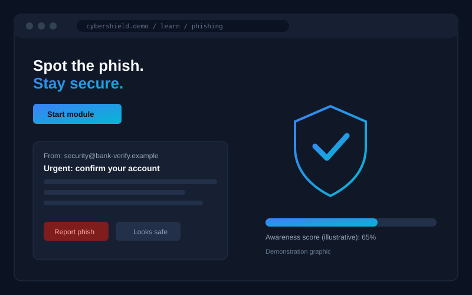

Cybersecurity · DemonstrationCyberShield Awareness Platform
A cybersecurity awareness platform designed to educate everyday users about phishing, online fraud, password safety and digital security through short lessons and interactive exercises.
- Phishing spotting exercises with example emails
- Password safety tips and a strength checklist
- Plain-language fraud and scam awareness guides
- Progress-style awareness score (illustrative)
Illustrative demonstration project, not a deployed product.
Overview
Many people fall for scams not because they are careless, but because nobody showed them what a scam looks like. CyberShield is a concept for a friendly learning space that turns phishing, fraud and password safety into short, practical lessons.
Planned features
- Interactive "spot the phish" exercises using fictional emails
- Password safety guide with a simple strength checklist
- Online fraud and social engineering awareness cards
- Quick quizzes that reinforce each lesson
- Illustrative awareness score to motivate learners
Technologies
What it demonstrates
Applying cybersecurity fundamentals to user education, plus interface design, interactivity and clear writing.